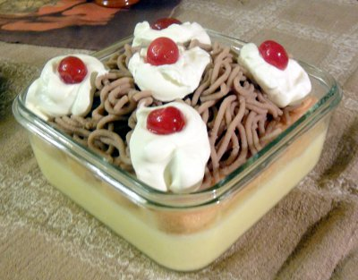

| Zutaten für 6 Personen: | |
| 1 Beutel | Dessert Vanille |
| 5 dl | Milch |
| 1 Pack | Vermicelles |
| Zum Garnieren | |
| 70 g | Löffelbiskuits |
| 1 EL | Kirsch |
| 1 dl | Rahm |
| Kirschen, kandiert | |
Beutel Dessert Vanille mit der Milch nach den Angaben auf dem Beutel zubereiten.
Puddingform kalt ausspülen, Dessert darin 3 - 4 Stunden fest werden lassen.
Inzwischen Vermicelles 2 - 3 Stunden auftauen lassen.
Puddingköpfchen vorsichtig auf eine Platte stürzen. Unterseite der Löffelbiskuits kurz in Kirsch (mit 1 EL Wasser verdünnt) tauchen. Biskuits rund um den Pudding stellen.
Vermicelles mit der Presse bergförmig über den Pudding dressieren.
Dessert mit steif geschlagenem Rahm und Kirschen garnieren.
Herbert Eigenmann, Code: KNV
Schmeckt fein. RE 30.11.2010
Sandra meint man könnte das mit Caramelköpfli genausogut aber doppelt so schmackhaft machen.
@LINKBACK_TAG@ @WAKELOCK@